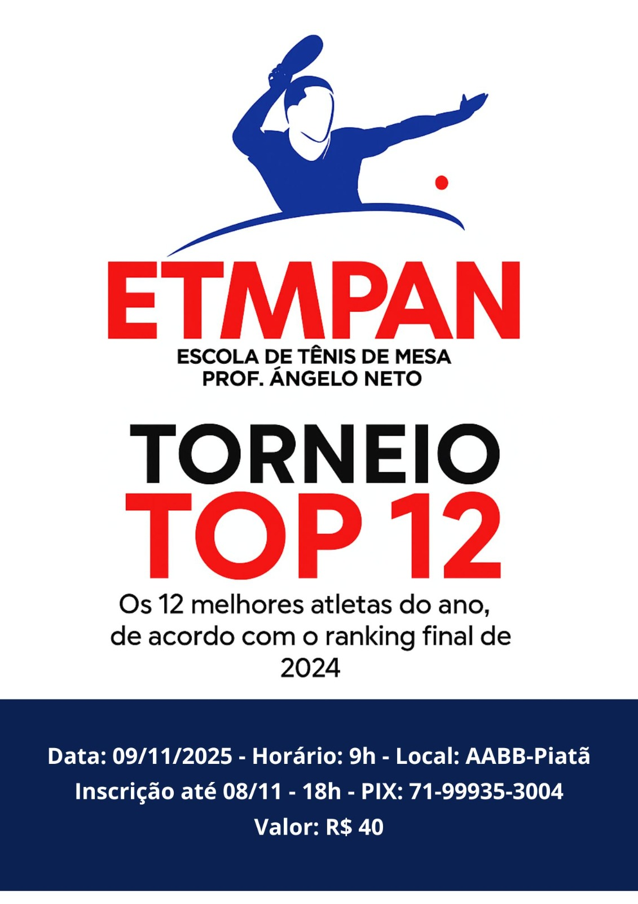
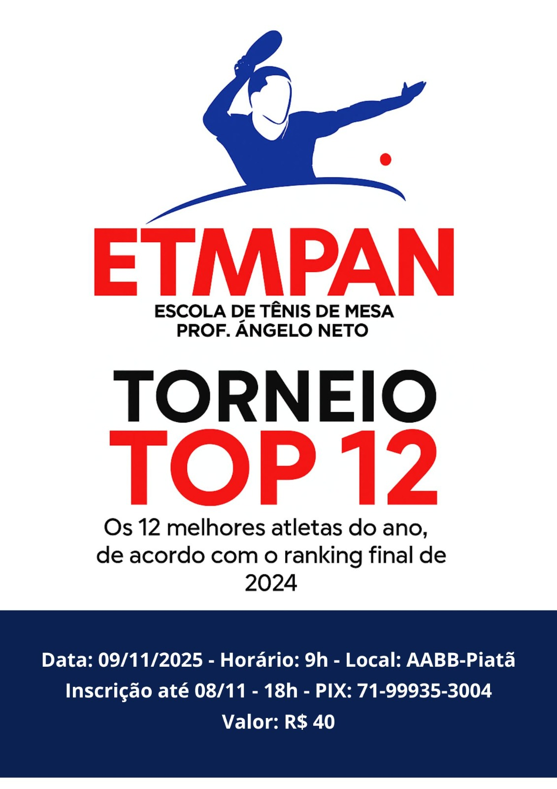
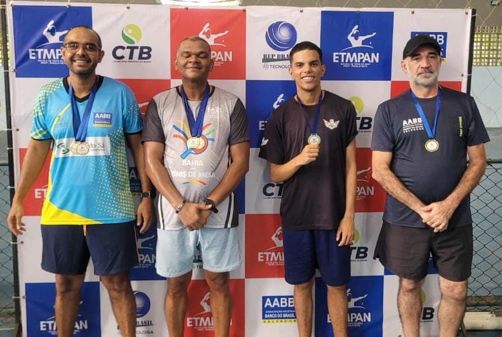
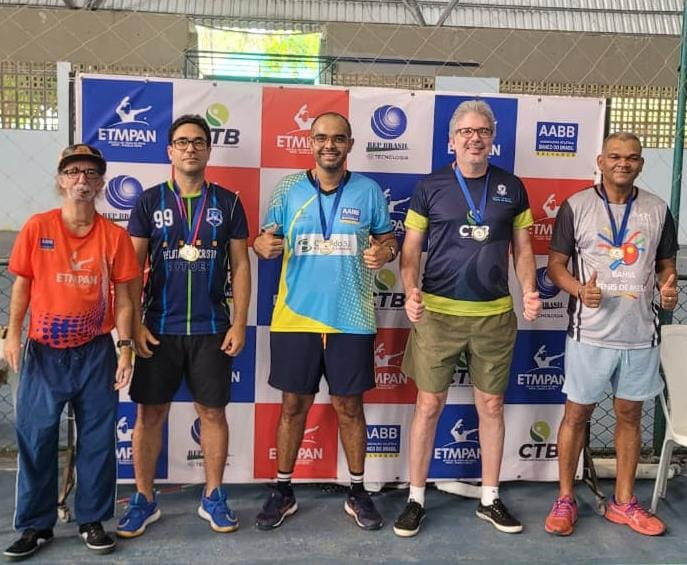
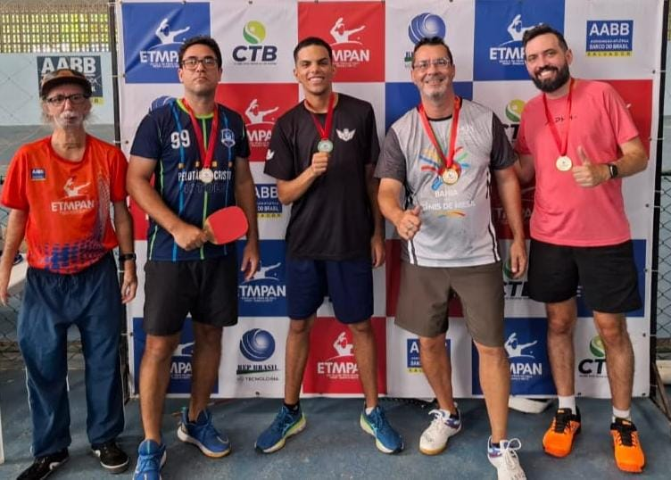
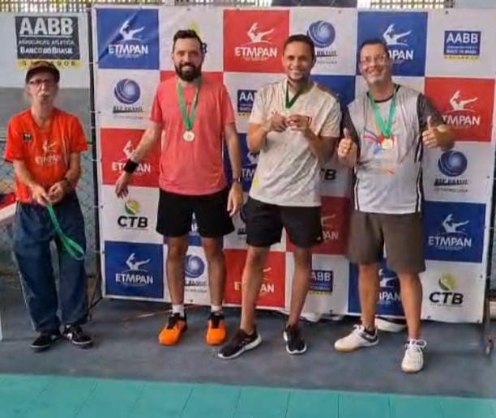
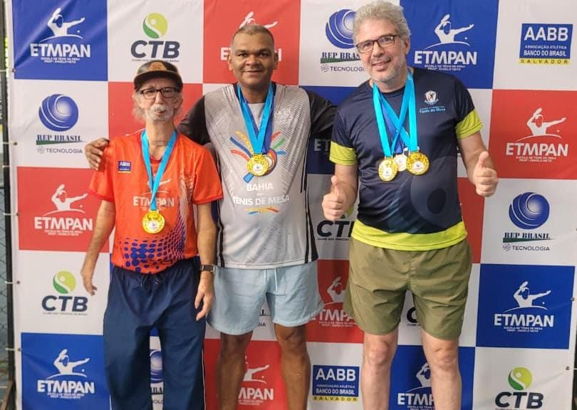

TORNEIO ETMPAN - TOP 12 / ETAPA 1 2025
 

🏓 ETMPAN encerra 2024 e abre 2025 com resultados espetaculares
A ETMPAN – Escola de Tênis de Mesa Professor Ângelo Neto encerrou 2024 com conquistas marcantes e iniciou 2025 com jogos de altíssimo nível técnico, consolidando-se como referência do tênis de mesa baiano.
🏆 Paulo Carneiro é o Campeão do Ano 2024 — Tricampeão ETMPAN
- 🥇 Campeão: Paulo Carneiro
- 🥈 Vice-Campeão: Ângelo Neto
- 🥉 3º Lugar: Inigmar Veras
🌟 Destaques da Temporada 2024
Thiago Silva e Inigmar Veras foram reconhecidos como os Destaques do Ano pelo desempenho técnico e espírito competitivo.
🏓 TOP 12
🥇 1ª DIVISÃO
🥈 2ª DIVISÃO
🥉 3ª DIVISÃO
🌟 DESTAQUES 2024

🏆 CAMPEÃO DO ANO
🏓 ETMPAN consagra os campeões da Temporada 2024 e abre 2025 com grandes disputas
A ETMPAN – Escola de Tênis de Mesa Professor Ângelo Neto segue fazendo história no tênis de mesa baiano. Encerrando a temporada 2024 e iniciando 2025 com disputas repletas de emoção e talento, o circuito reuniu atletas de destaque e novos talentos em ascensão.
🥇 TOP 12 – Etapa Final 2024
O encerramento da temporada foi marcado por duelos de altíssimo nível. Paulo Carneiro brilhou na grande decisão, confirmando sua excelente fase e conquistando o título máximo da temporada 2024.
- 🏆 Campeão: Paulo Carneiro
- 🥈 Vice-Campeão: Anderson Nascimento
- 🥉 3º Lugar: Gilton Lima
- 🥉 3º Lugar: Eliel Barbosa
Paulo Carneiro encerrou o circuito como tricampeão ETMPAN, acumulando o maior número de pontos da temporada e conquistando o título de Campeão do Ano. Ângelo Neto terminou como vice e Inigmar Veras ficou com o terceiro lugar. Os destaques da temporada foram Thiago Silva e Inigmar Veras.
⚡ 1ª Etapa 2025
Na abertura da nova temporada, grandes nomes voltaram a se enfrentar com intensidade e técnica.
- 🥇 1ª Divisão: Campeão Anderson Nascimento | Vice Saulo Feitosa | 3º Paulo Carneiro e Inigmar Veras
- 🥇 2ª Divisão: Campeão Eliel Barbosa | Vice Saulo Feitosa | 3º Romilton Carvalho e Maurício Sampaio
- 🥇 3ª Divisão: Campeão Matheus Santana | Vice Maurício Sampaio | 3º Romilton Carvalho e Marcos Natal
Anderson Nascimento foi um dos grandes destaques ao ser campeão da 1ª Divisão e vice do Top 12, enquanto Eliel Barbosa brilhou como campeão da 2ª Divisão e terceiro do Top 12 — ambos com atuações espetaculares.
💬 Mensagem Final
A cada torneio, novos talentos surgem e os experientes se reinventam. A ETMPAN se orgulha de formar atletas, promover integração e fortalecer o tênis de mesa na Bahia.
Parabéns a todos os participantes, campeões e equipes envolvidas!
O futuro do tênis de mesa baiano continua em excelentes mãos. 🏓✨